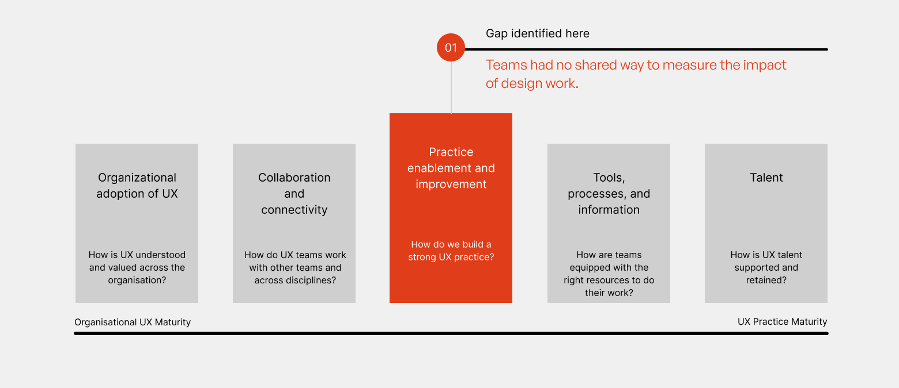
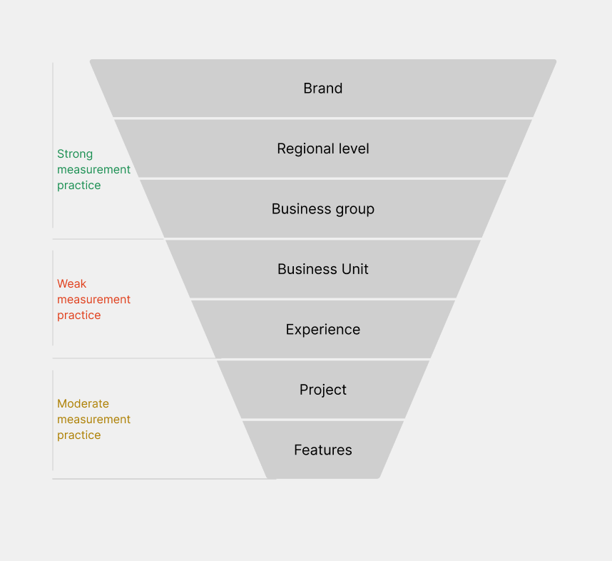
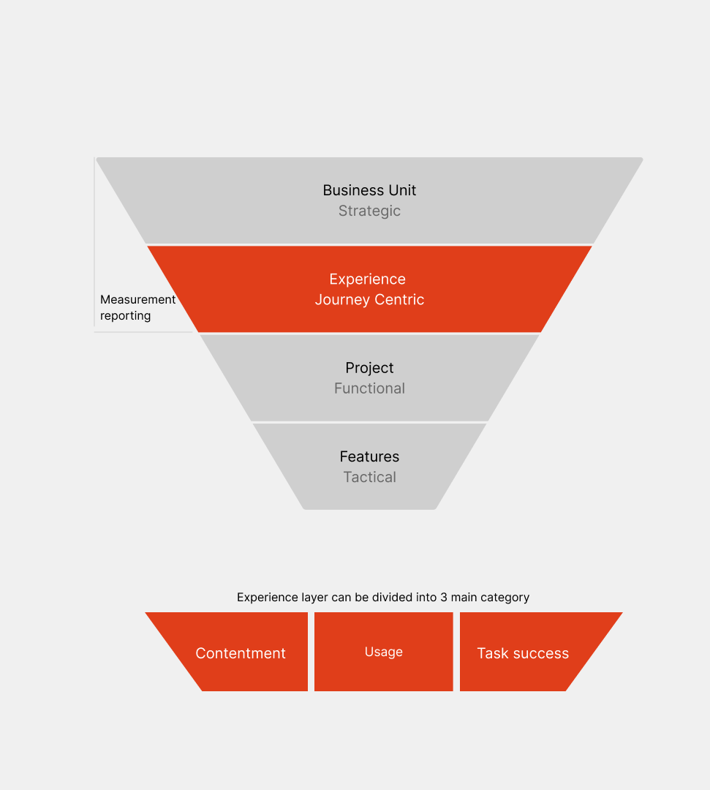
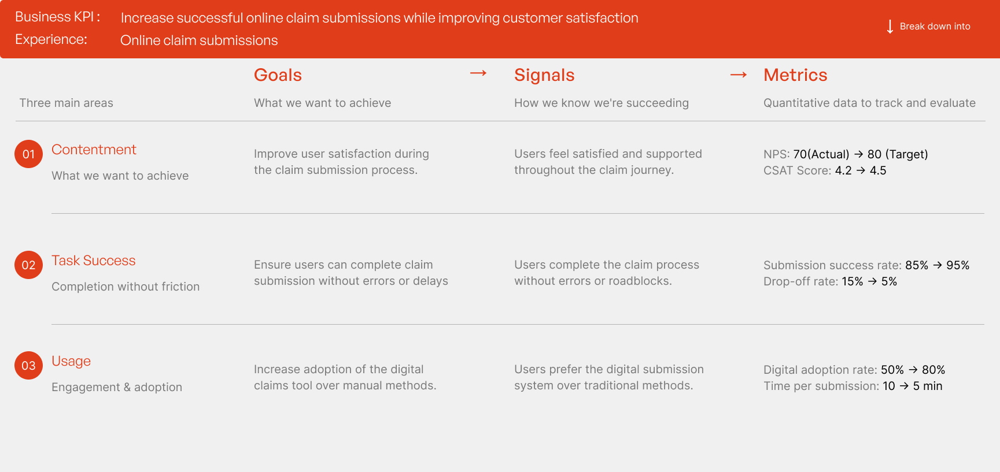
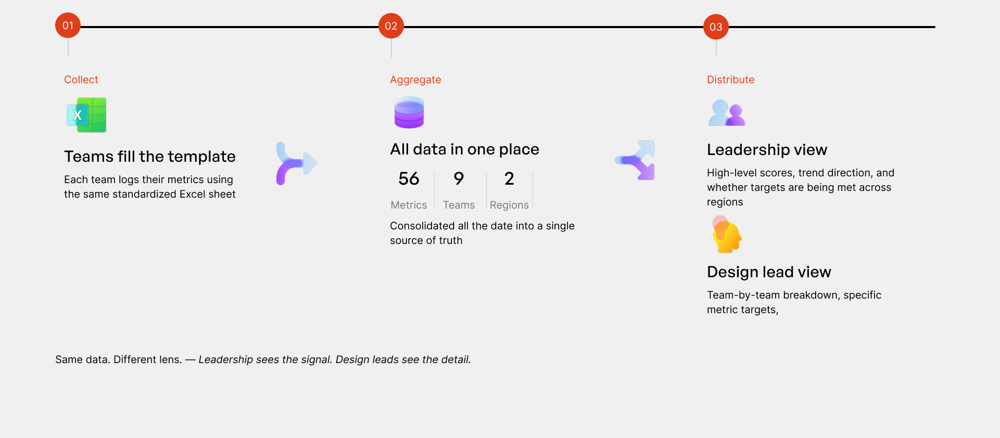
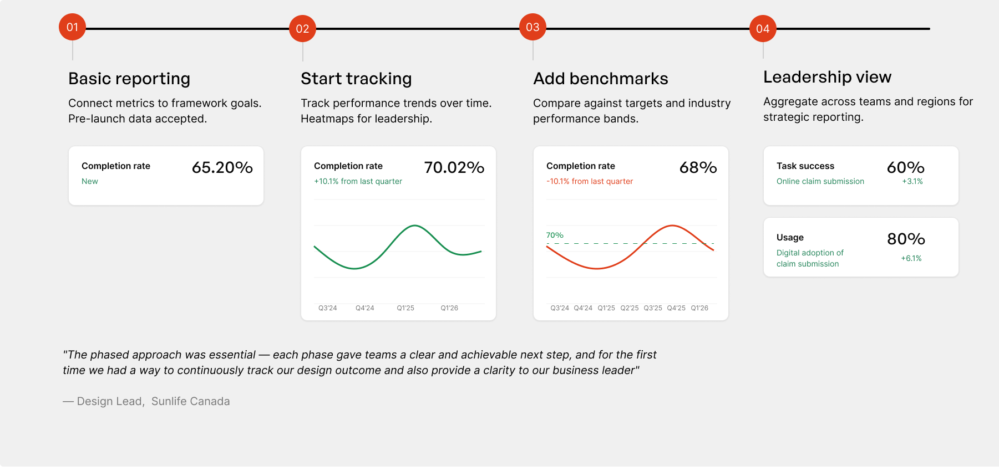

Sunlife — UX Measurement Framework
Experience Strategy · 2024
A unified approach to tracking and reporting experiences — delivering client and design impact across Sunlife's globally distributed product teams.
Project overview
Teams across regions measured design in different ways — or not at all. Mapping Sunlife against a UX-maturity model surfaced the real gap: practice enablement. Teams had no shared way to measure the impact of design work, so leadership couldn't see how design moved the business.

Measurement was already strong at the Brand, Regional, and Business Group levels — but weak at the Business Unit and Experience levels. That weak band was the blind spot: leadership could see the big picture and teams could see their features, but nothing connected the two.

Rather than try to fix every weak level at once, I focused on the Experience layer — the journey-centric band that bridges high-level business goals and day-to-day project work. It was the deliberate place to intervene because it can be broken into clear, repeatable units of measurement: Contentment, Usage, and Task Success.
Framing measurement around the experience — not one-off projects — meant teams could track the same things consistently and iterate on them quarter over quarter, turning a one-time audit into an ongoing practice.

I built the system on a Goals → Signals → Metrics model. For each experience — for example, online claim submissions — teams define what success looks like (Contentment, Task Success, Usage), the signals that show they're getting there, and the hard numbers to track.

To make adoption frictionless, the framework runs as a simple three-step pipeline. Every team logs to the same template, all of it consolidates into a single source of truth, and two tailored views serve different audiences — leadership sees the signal, design leads see the detail.

Rather than force every team into a mature practice overnight, I designed a crawl-walk-run rollout so adoption was achievable at every step:
- Basic reporting — connect metrics to framework goals; pre-launch data accepted.
- Start tracking — trend performance over time; heatmaps for leadership.
- Add benchmarks — compare against targets and industry bands.
- Leadership view — aggregate across teams and regions for strategic reporting.

The impact